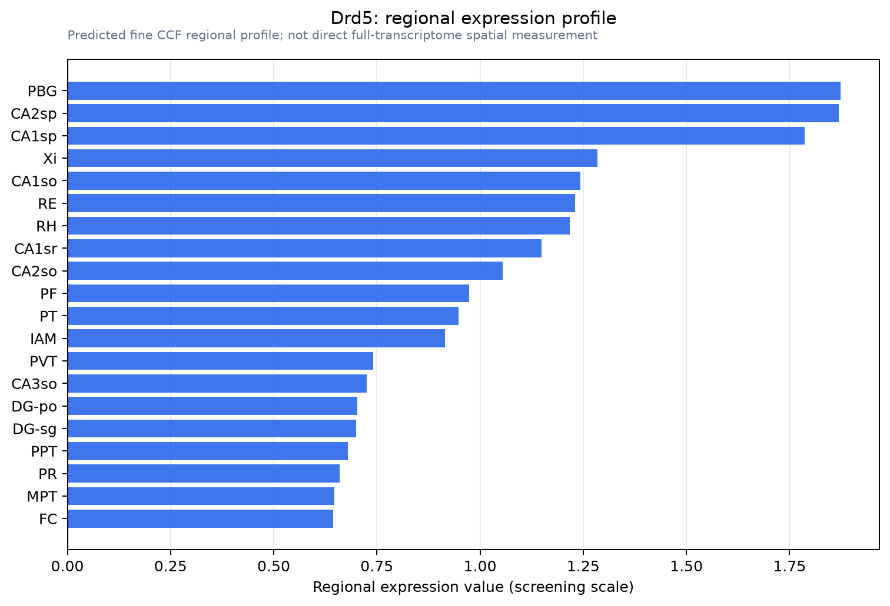

Drd5
D(1B) dopamine receptor (D(5) dopamine receptor) (Dopamine D5 receptor)
Spatial tier: RESTRICTED · Class: GPCR · Top region: PBG (Parabigeminal nucleus) · Positive regions: 25/554
44.6Discovery Score
40.2Targetability Score
CEvidence grade C
What this means: Drd5: fine CCF profile is restricted toward PBG (top regions: PBG, CA2sp, CA1sp, Xi, CA1so; 25 positive regions); direct spatial validation is still required.
Direct spatial evidence
MERFISH REGION LOCATOR

Regional expression figure

Predicted WMB × fine-CCF profile; not direct full-transcriptome spatial measurement.
Spatial profile
Evidence and specificity
- Evidence status
- PREDICTED_FINE
- Direct sources
- None; predicted localization only
- Exclusive threshold
- 12 positive regions out of 554
- Spatial specificity
- 0.324
- Top-region fraction
- 0.055
- Filter status
- PASS
Interpretation limits
- Cell-type-to-region projection is imputed expression, not direct spatial measurement.
- Adult reference atlases do not establish stability across age, sex, strain, state, or disease.
- Transcript abundance does not guarantee protein abundance or genetic-tool performance.